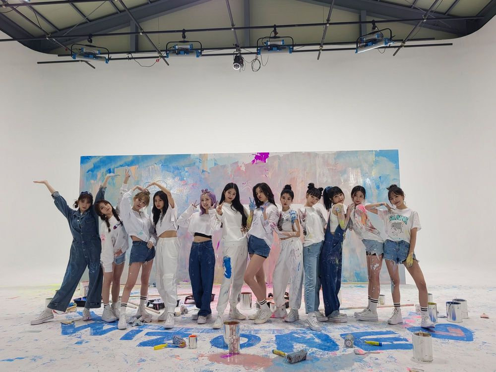

안뇨옹 오늘 하루도 잘 보냈어요?? 이제 이 메일이 정말 마지막이라고 생각하니까 조금 슬프다 그쵸? 오늘따라 더 보고시퍼용 날씨도 좀 춥더라 내가 맨날 밥은 먹었는지 행복한 하루 보냈는지 물어봐줘야되는데 ㅜ 이제는 항상 언제나 맛있는 밥 챙겨먹고 건강해야해요 저 건강한 건 우리 위즈원이 더 잘알테니 걱정말구 하루하루 즐겁게 지내기!! 지난 시간동안 우리를 아낌없이 사랑해주고 응원해줘서 너무 고마웠어요 열한명의 멤버들과 위즈원을 만난 건 저에게 엄청난 행운인 것 같아요 무엇보다 지치고 힘들 때 연락할 수 있는 사람들이 열한명이나 있다니까용 ㅎㅎ 그리구 마지막으로 ! 항상 애정담긴 편지를 보내주시는데 거기에 하나하나 답장할 수 없어서 미안했던 적이 많아요 덕분에 많이 위로받았고 힘이 났어요 고맙습니다 ㅎㅎ 저를 좋아하고 응원했던 시간들이 후회되지않게 앞으로 더 멋있는 사람이 될게요 사랑합니다 안녕💙
今まで応援してくださったファンのみなさんありがとうございました
これからもあなたのゆうじんになれるように😉大好きです💙
